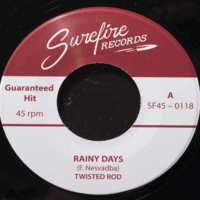

Twisted Rod - Rainy Days / My Pretty Baby (Single, 2019)
01 - Rainy Days (2:18)
02 - My Pretty Baby (2:25)
© Surefire Records :: [SFR45-0118]
Notes
Prague, Czech Republic.
7" Vinyl, 45 RPM, Mono
According to the founder of Surefire Records, "the Twisted Rod was recorded at the Lightning Recorders. It was a 100% analog procedure without a single digital step between recording and the final product. Impressive these days!"
reference information: Discogs®
Review
036/366 (Project 366)
Twisted Rod's single sounds definitely ligther than cloudy thoughts, with a dreamy tone and full of drive. Both songs are very energetic and that is suitable for classy Rock'N'Roll / Rockabilly. "Rainy Days" is perhaps a bit of a twistin' theme with a wild groovy guitar solo in the middle of the song. And "My Pretty Baby" is surely rockin' and strollin' one with a howling tone! Both with a hot act from start to end.
Nice couple of songs. Melodious "Rainy Days" with its own lyric and with ample instrumental support. Uncomplicated, but it is good. And nifty "My Pretty Baby" with its own craze and with rampant accompaniment. A pretty catchy tune no less than "Rainy Days". Of course, all this with the help of outline by vocalist. By the way, songs are credited to him. Well done and great, fine attempt to produce some rockabilly strokes.
I really like how the Twisted Rod sounding cheerfully despite its a little be clumsy shade around. In any case, the songs are really perky, and the band tried to show their best on it. Should someone ask "is it really a surefire hit?" Who knows.. but I am sure of it. This is surely a fire hit!